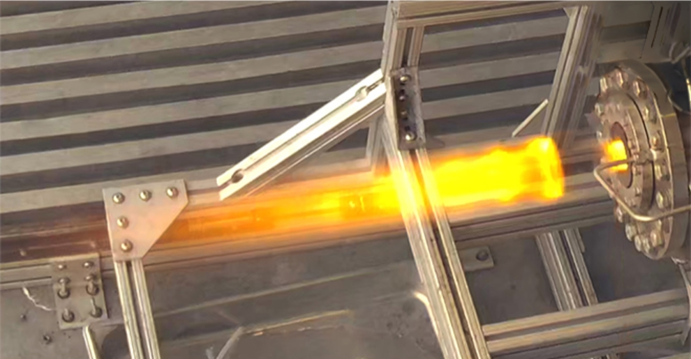
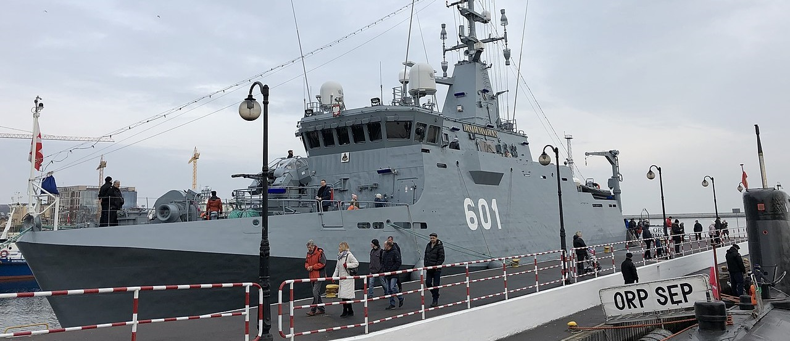

Work Experience
Mechatronics Engineering Intern @ Svante
Responsible for supporting Svante's test team in the design and development of automated test stations and data analysis software.
Propulsion Intern (Mechanical) @ Reaction Dynamics Labs
As a Propulsion Intern at Reaction Dynamics Labs, I worked on several projects including the analysis of a Liquid Injection Thrust Vector Control Nozzle, testing the company's Large Scale Engine in a variety of test configurations, and developed a engine alignment and thrust cell calibration device.
Product Development Engineering Co-op @ OSI Maritime Systems
Collaborated on the development of integrated tactical and navigational systems for several navies. My primary project was preliminary systems engineering work on the Polish ORP Kormoran (pictured above). Image by Bart Corke, https://commons.wikimedia.org/wiki/File:ORP_Kormoran.jpg